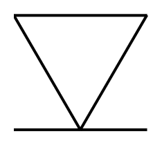
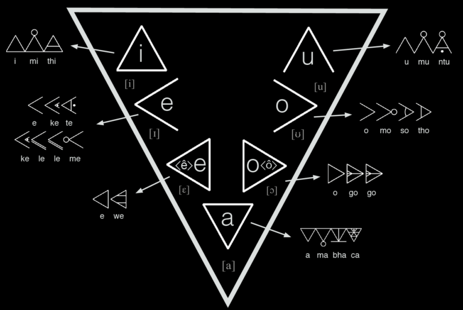
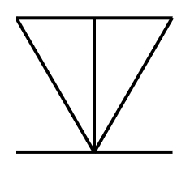
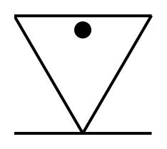
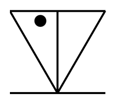
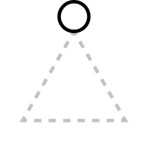

A simple explainer page with interactive chart
↓ Skip to interactive chartIsiBheqe soHlamvu is a modern, phonetically-based indigenous writing system developed for all Southern African isiNtu languages. It is also known as Ditema tsa Dinoko, Xifhungo xa Manungu, or Vhuga ha Madungo.
IsiBheqe/Ditema draws from Southern African traditional art, like Sesotho litema art (used on murals) and isiZulu ucu art (used on beadwork). This art was decorative but also used systems of shapes to convey messages—births, milestones, news for neighbors and travelers.
The script can be used for all Southern African isiNtu languages and dialects. It's especially useful for languages without formal Latin orthography, like sePulana, isiBhaca, isiHlubi, sePhuthi, isiLala, isiNhlangwini, and Northern Transvaal isiNdebele.
Using this page:
👆 Step through the walkthrough below to understand the writing system
🎵 Interactive chart — click any symbol to hear it

In English you write one letter per sound: g-e-t = 3 letters for 3 sounds. IsiBheqe works differently — one symbol captures a full syllable: vowel and consonant bundled together.
A single symbol is called an ibheqe (plural: amabheqe). The symbol to the left is the ibheqe for pʰa — the syllable in pha, meaning "give" in isiZulu and Sesotho. Two symbols already make words: i·pha (give) and m·pha (give me).
At the centre of every ibheqe is a triangle — the nucleus. Think of the triangle as your mouth. The direction it points shows where your tongue goes when you make the vowel. For i the tongue rises to the roof of your mouth, so the triangle points up. For a the tongue drops to the floor of your mouth, so it points down. Your jaw only moves to make room: it drops for a because the tongue needs the space.
👆 Tap a vowel to hear it — on the diagram or the buttons below

Try it: say lilimi and feel where your tongue sits. Now say lala. With lilimi your tongue rises to the roof of your mouth; with lala it drops to the floor. That is why i points up and a points down. For e and o, try ewe and oko oko.
Start with where. The position of the mark around the triangle shows where in the mouth-house the sound is made:
Then how. The shape of the mark shows how the air moves. There are two basic kinds of sound: a once-off sound, where the air is stopped and released in one pop, and a continuous sound, where the air keeps flowing. Everything else builds on these two:
Clicks have their own shapes; you will meet them in the chart.
Your lips make all four of these words the same way. What changes is what your throat does. Two extra marks show it: the uphimbo, a line down the middle of the triangle, means voiced (your throat buzzes); the lerothodi, a small dot, means the air does not come from your lungs. Tap a word to hear it.
The walkthrough showed you where and how — this section zooms in on the extra marks that tell you which version of a sound you're looking at. Same place, same shape, different release.
Your vocal cords can buzz (voiced) or stay quiet (voiceless) for any consonant. In the symbol, voicing is the uphimbo: a vertical line from the tip of the triangle to its base, like the central post of a house. You can feel it as a buzz in your throat from the first moment of the sound.

English doesn't have ejectives, but they're common in isiZulu, Sesotho, and Setswana. The air does not come from your lungs. Your throat closes, the air trapped in your mouth is squeezed, and it pops out sharply. Lerothodi, ilithonsi and iliconsi all mean a droplet.

An implosive looks voiced — and it is — but there's a subtle extra quality. As the lips close and release, air briefly draws inward before the burst outward. It gives the sound a slightly hollow, sunken quality.

The ingungwana is a circle at the tip of the triangle, touching it. It opens a second doorway for the air: the nose. The air starts out through your nose, then the consonant follows through your mouth, so fast that it is one sound, not two.

It also does grammar. In many siNtu languages a nasal at the front turns a verb into a noun. Sesotho ruta (teach) becomes thuto (a lesson): it was once n + ruto, and the nasal changed the r to th before it dropped away.
Every symbol in this chart is a whole syllable: the consonant written with the vowel a (the downward triangle). Turn the triangle to change the vowel; the consonant marks stay where they are.
Under each symbol: how it is spelled in the Latin alphabet. A spelling with no language named is the same in Nguni, Sotho, Tsonga and Venda.